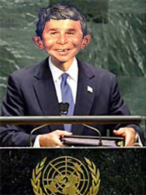

|

Bush's U.N. Speech: The First Draft
The speech we would like to have heard, i.e., the honest one.
- - - - - - - - - -
by Mark Spittle
R. GENERAL SECRETARY, ladies and gentlemen of the United Nations, Ambassadors and Delegates.
I would like to thank you for letting me return before you and present what I see as a very important step in repairing not only the relations between the world and Iraq, but also between the United Nations and my own country, the United States of America.
When I last stood before you, and a few other times when I sent some other people to stand before you, and a whole lot of other times you don't even know about when a bunch of us stood behind your backs, I said the UN risked irrelevance.
I said that the UN risked becoming nothing more than a debating society. I'd like to apologize for those crass comments.
I'd like to, but I really can't.
As I am sure many of you are aware, a world leader can never lose face when standing on the world stage.
That may seem strange to some of you, coming from someone who you have no doubt seen doing such face-losing things as dropping the family dog in front of the press corps, stuffing his jumpsuit crotch with a sock full of nickels, and mangling the English language so it better resembles the utterances of a sloth with two tongues.
But those were domestic gaffes, and not international ones. I'm allowed those. Americans don't know any better.
But when I stand before the United Nations I have to remain, in your eyes, resolute and strong, even if inside I am nothing more than a frightened, cowering child wishing only to suck my thumb and call for mommy. Or at the very least, Dick Cheney.
So I will not apologize for calling you irrelevant to your faces, or calling you all a bunch of crossdressing donkey buggerers behind your backs. No, I stand by those comments, even though to do so may bring your ire down upon me.
At least I am a man who stands by his words, if not his fellow Texas Air National Guardsmen.
Now, about Iraq. As I am sure many of you remember, partly due to the fact that your international press is better at staying on-topic than the US press is, I pretty much thumbed my nose at you when I wanted to invade Iraq.
As you may recall, the French were especially rough on me, and sure, history proved that they were 100% right all along, but I think we can all agree that none of us in the room really like the French.
I mean, look over at the French delegation... everyone has moved their seats away from them. Being right doesn't mean you should stop showering.
Now that Iraq has turned into a quagmire, a word I am pretty sure means ‘Vietnam' in French, I am forced to come before you and fall on my sword.
Well I am not about to do that. Instead, I will plead and beg that you help us in Iraq. But I will not fall on my sword.
You see, I represent the American people. And the American people are tired of hearing about how every day more and more American soldiers are being killed in Iraq, and how more American soldiers have died since I put on my flight suit than before.
They are sick and tired of hearing Donald Rumsfeld insist everything is peachy when their sons and daughters are coming home draped in flags.
And let me tell you, they are really sick of hearing Scott McClellan call everyone a revisionist each time he revises something.
The American people feel it is the UN's duty to assist in the rebuilding of Iraq.
First of all, they believe this because they understand the United Nation's role in the world far better than my advisors did a few months ago. And secondly, they really would rather see your soldiers getting killed than ours.
I know that I would be a happy camper if all I heard about were the French, the British or Romanians getting their asses kicked, while our boys did things like wave flags, topple statues and hug babies.
So, I am asking you to forget the past, forget whatever was said, and look forward. Look to a future where the United Nations can prove itself relevant by sending its soldiers into a quagmire, and help free up the American responsibilities there.
I'm asking you not only as a friend within the international community, but as a world leader heading into a re-election.
One more thing, I know we owe some dues. Please stop sending the late notices.
Thank you, and may the American version of the Christian God bless you all.
Reprinted from Liberal Oasis

|